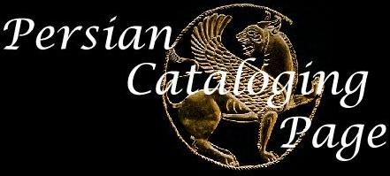

[Top]

Send a Message
Persian Cataloging Manual
Persian NACO Manual
Persian Diacritics
Persian Transliteration Table
(external link)
Table for Converting Persian Dates
Credits:
By
Juliet Yaghoobi Nasab
and
Jim Weinheimer
Design and HTML Markup by
Jim Weinheimer
[Top]